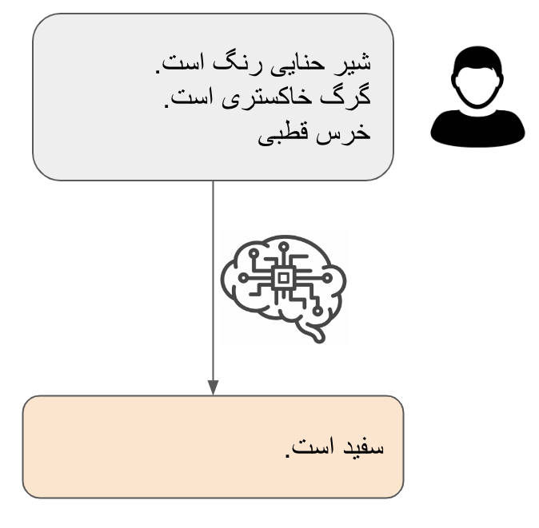
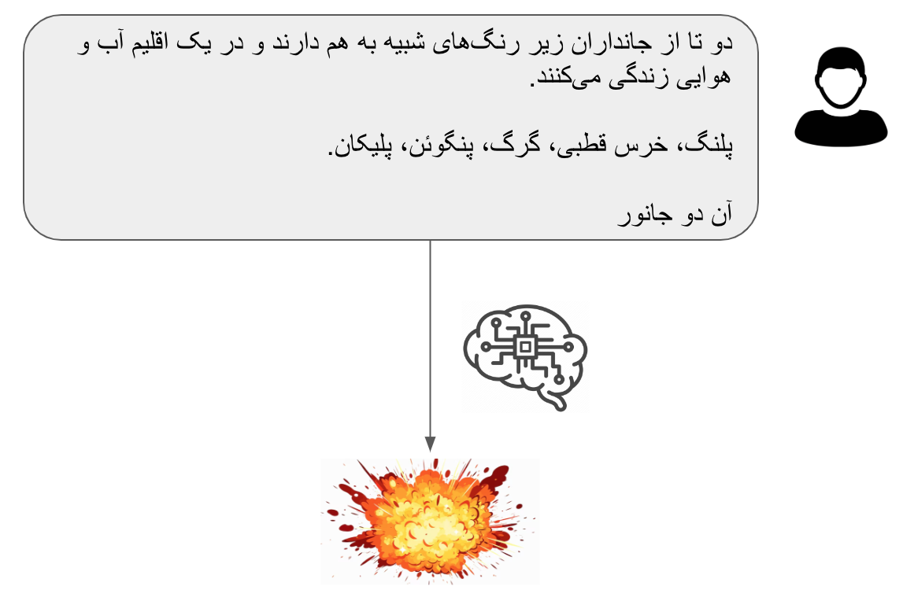
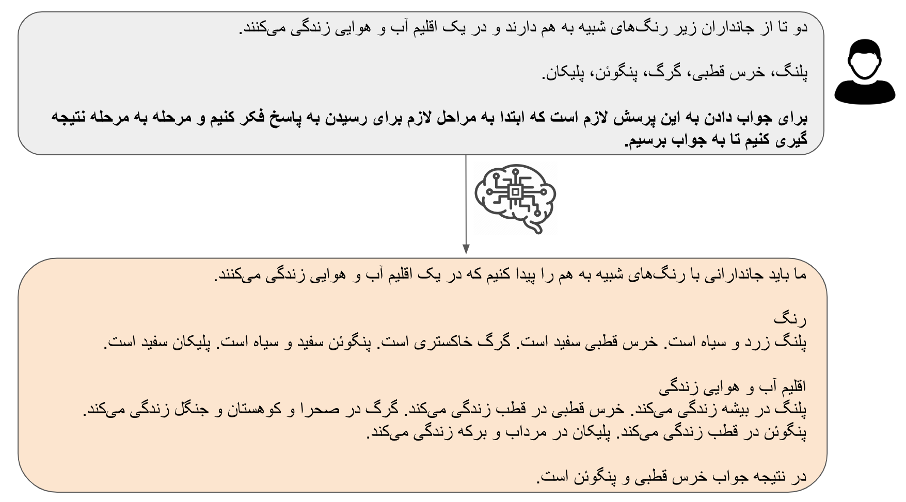
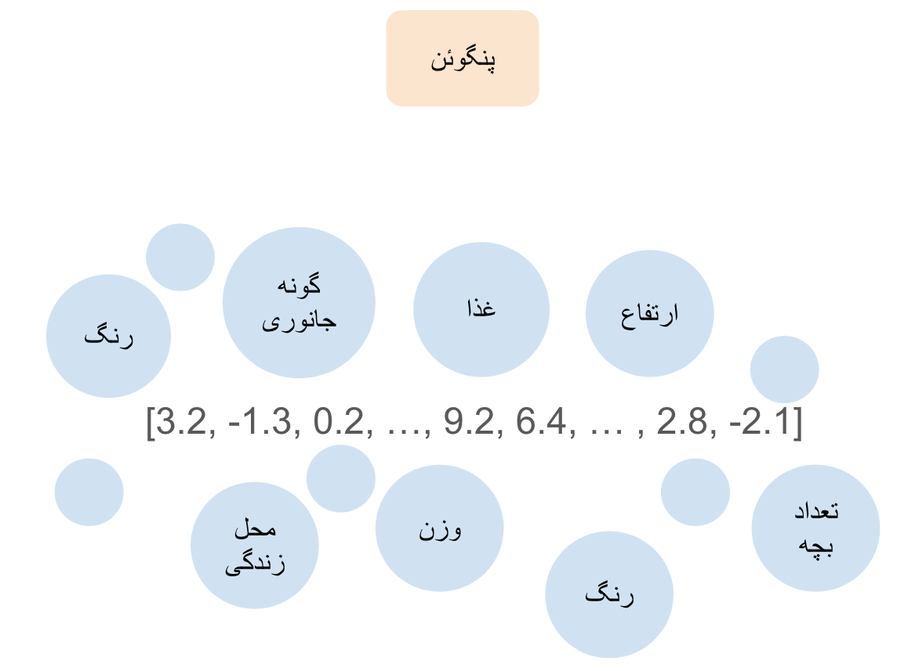
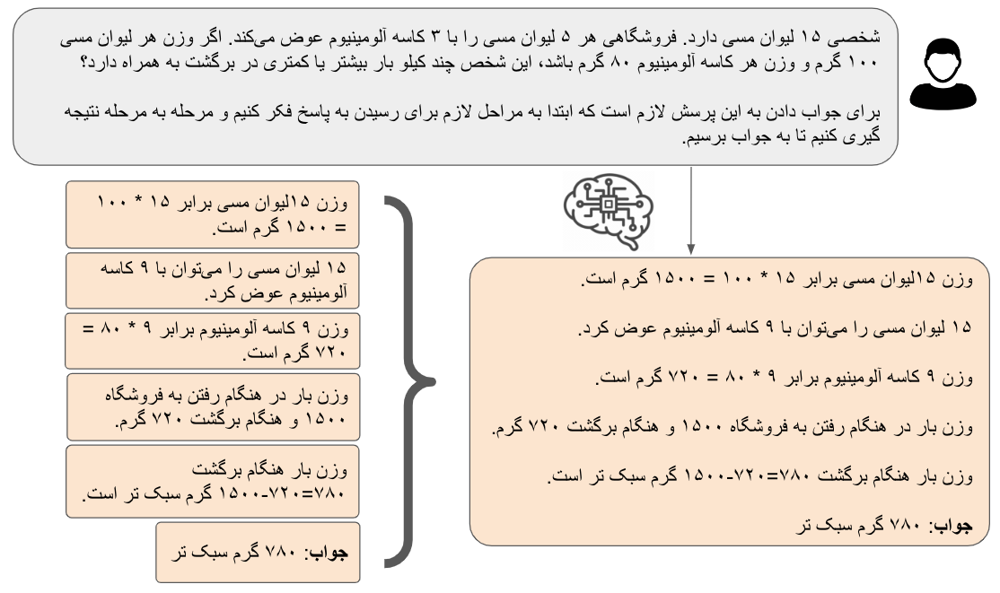
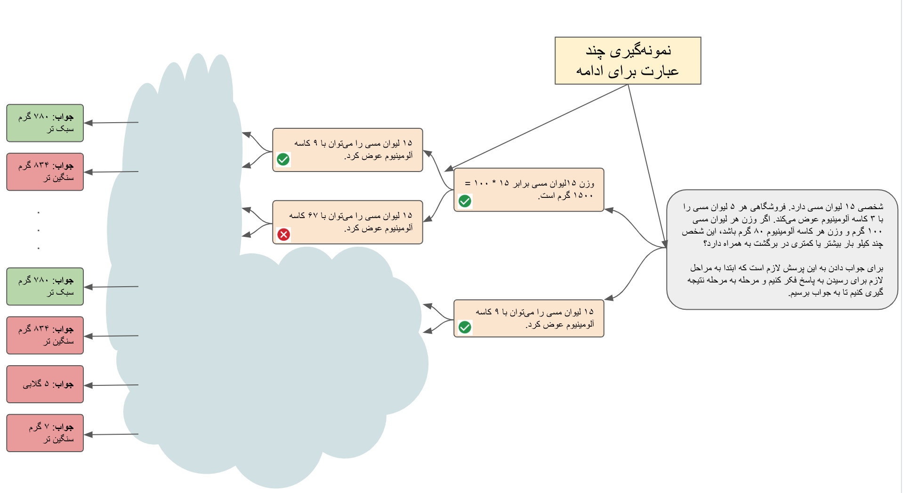
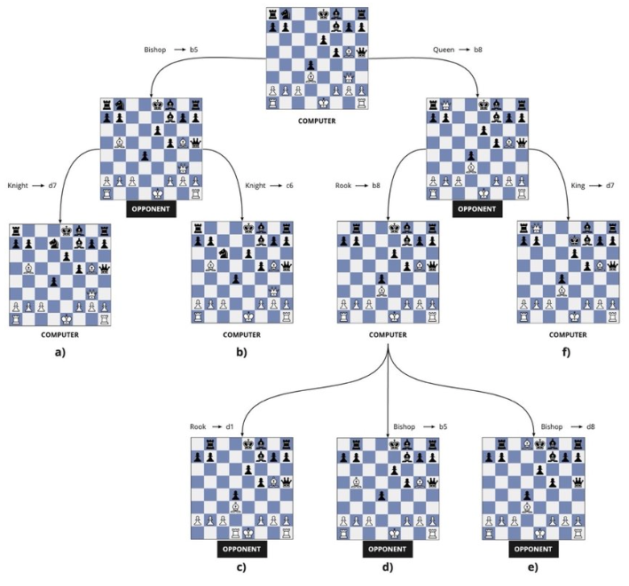

در دو نوشته قبلی با الگوریتمهای پشت مدل های پیشرفته هوش مصنوعی نوین آشنا شدیم. در نوشته اول به سراغ ترانسفورها رفتیم و در مورد اینکه چطور مفهوم کلمات (در واقع نشانهها یا همان توکنها) را در بردارهایی ذخیره میکنند صحبت کردیم. این بردارها در هر لایه ترانسفورمر با توجه به بردارهای دیگری که در اطرافشان هستند (بردارهای مربوط به سایر کلمات در متن) دستخوش تغییر میشوند. در نهایت ما از این بردارها تابعی میسازیم تا احتمال هر کلمه را با توجه به کلماتی که قبل از آن آمدهاند پیشبینی کند. در متن دوم با تفاوت ظریف بین یک مدل زبانی معمولی و یک دستیار هوشمند واقعی آشنا شدیم و گفتیم که چطور مدلهای زبانی پیشرفته سعی میکنند توزیع آماری کلمات پیش بینی شده را دستکاری کنند تا جوابی که از نظر کاربران مفیدتر هستند تولید کنند.
در این متن میخواهیم به سراغ قابلیت تفکر و استدلال مدلهای زبانی برویم. یکی از بحثهای بسیار داغ اخیر توانایی استفاده مدلهای زبانی از زنجیره فکر (Chain of Thought) بوده است. مدلهای جدید OpenAI و مدل DeepSeek با استفاده از این روش به قابلیتهای جدید در حال مسائل ریاضی و برنامهنویسی رسیدند. در اینجا میخواهیم به این بپردازیم که زنجیره فکر چه هست و چرا باعث بهتر شدن مدلهای هوش مصنوعی شده.
بیایید با مثالی ساده از زنجیره فکر و کاربرد آن شروع کنیم. پیش از آن باید یادآور شویم که استفاده از زنجیره فکر در بسیاری از موارد کمکی به قابلیتهای یک مدل زبانی نمیکند. مثال کامل کردن عبارت زیر را در نظر بگیرید:
در اینجا مدل زبانی ما با توجه به متن میتواند به درستی تشخیص دهد که ما در مورد رنگ هر یک از این جانداران صحبت میکنیم و به سادگی به پاسخ درست برسد. ولی حالا بیایید مثال کمی پیچیدهتر زیر را در نظر بگیریم:
کامل کردن این عبارت به سادگی عبارت قبلی نیست. در اینجا نمیتوان دوباره در یک مرحله به جوابی رسید. دلیل آن این است که در اینجا جواب به پیش پا افتادگی قبل نیست. برای رسیدن به جواب درست برای کلمات بعدی ما نیازمند چندین مرحله استنتاج منطقی هستیم و این چیزی است که مدلهای زبانی در آن خیلی خوب نیستند.
حال بیایید طرح سوال را کمی عوض کنیم (به قسمت پر رنگتر متن زیر دقت کنید):
اینبار مدل ما توانست با توجه به جوابهای میانی که در رسیدن به جواب نهایی مهم بودند به درستی به جواب برسد. توجه کنید که جوابهای میانی که مدل در اینجا تولید کرد عبارتهایی هستند که مدل توانایی تکمیل آنها در یک مرحله را داشت: اشاره به رنگ جانداران مختلف و محل زندگی آنها به احتمال نزدیک به قطعیت در پیکره دادههایی این مدلها بوده (فراموش نکنیم پیکره داده شامل ویکی پدیا و تقریباً هر کتابی که فکرش را بکنیم). پس برقراری ارتباط بین آنها برای مدل ساده است (همانطوری که در مثال اول دیدیم). ولی در کنار هم قرار دادن رنگ و محل زندگی به احتمال زیاد در هیچ یک از متنهایی که مدل آنها را دیده است نبودهاند. برای رسیدن به پاسخ مناسب در این مورد مدل ابتدا لازم دارد که متن جدیدی تولید کند که شامل هر دو این اطلاعات باشد. بعد با در کنار هم قراردادن آنها نتیجه نهایی را به راحتی تولید کند.
حال بیایید بیشتر در مورد این صحبت کنیم که چطور زنجیره فکر به رسیدن به جواب کمک میکند. برای درک بهتر شاید بد نباشد نگاهی دوباره بیندازیم به شیوه مدلهای زبانی برای ذخیره اطلاعات به کمک بردارها. همانطور که در نوشته اول گفتیم، هر کلمه در مدل زبانی برداری دارد که دربرگیرنده تمامی مفاهیمی است که آن مدل توانسته است در مورد این کلمه از متنهایی که دیده استخراج کند. این بردار را میتوان فشردهای از مشاهدات مدل زبانی از آن کلمه یا مفهوم دانست (منظورمان از مشاهده متنهایی هستند که در زمان یادگیری به مدل نشان داده شده). برای مثال واژه پنگوئن را در نظر بگیرید. این واژه برای ما مشخص کننده جانداری است که مشخصاتی از قبیل وزن، قد، قیافه، محل زندگی و … دارد. یک مدل زبانی سعی میکند تمامی این مفاهیم را به صورت فشرده در برداری با ابعاد مشخص ذخیره کند. این مدل برای این کار از مشاهداتی که در متنهای یادگیری آن بوده استفاده میکند. به عنوان مثال، دیدن جمله "پنگوئنها تخم گذار هستند" باعث میشود که مدل در حین یادگیری المانهای بردار مربوط به پنگوئن را به سمتی ببرد که مفهوم تخمگذاری را در بر میگیرد. این فضا قطعا جایی خواهد بود که بردارهای مربوط به مرغ و یا ماهی هم حضور پر رنگی دارند. به همین شکل دیدن عبارت "خرس قطبی از پنگوئن سنگین تر است" برداری را به سمتی میفرستد که حدودی از وزن پنگوئن را مشخص کند.
همانطور که انتظار میرود چنین بردارهایی دربرگیرنده حجم زیادی از مفاهیم هستند. مدل زبانی به راحتی میتواند یکی از این مفاهیم را از بردار بیرون بکشد. ولی پیچچیدهتر شدن، افزایش مراحل و در کنار هم قرار هم دادن اطلاعات نهفته در چندین بردار چیزی نیست که مدل توانایی انجام آن در یک مرحله را داشته باشد. اینجاست که مدل ابتدا طرحی برای حل سوال پیدا میکند: ما باید رنگ تک تک این جانداران را پیدا کنیم. سپس اقلیم مناسب هر یک را لیست میکنیم. داشتن این عبارات در کنار هم در یک متن به مدل کمک میکند که بردارها را در هر لایه ترانسفورمر با توجه به سایر مفاهیم در متن تغییر دهد. از این راه بیرون کشیدن مفاهیم لازم از بردارها برای رسیدن به جواب مناسب سادهتر میشود (برای درک بهتر این موضوع نگاهی به تغییر بردار پادشاه در مثال متن اول بیندازید).
یکی از دستاوردهای بسیار مهم استفاده از زنجیره فکر توانایی حل مسائل ریاضی و برنامه نویسی بوده است. دلیل آن سادگی پیدا کردن و چک کردن پاسخ درست در اینگونه مسائل از یک سو و دسترسی به انبوه سوالات از پیش طراحی شده از سوی دیگر است (یکی از منابع مهم سوالات امتحان نهایی ریاضی مدارس بوده که تنها یک جواب مشخص دارد). مثال زیر را در نظر بگیرید:
در اینجا دو نمایش مختلف از جواب را نشان دادهایم. در سمت راست جواب مرحله به مرحله مشابه آنچه که قبلاً دیدیم، و در سمت چپ همان جواب که مراحل آن به صورت جدا از هم نشان داده شدهاند. برای سادگی درک ادامه این متن بیایید هر یک از این مراحل را یک گام بنامیم. در عمل میتوان فرض کرد که مدل ما هر یک از این گامها را به صورت تک تک انتخاب کرده و با رسیدن به دانستههای آن گام به سراغ گام بعدی میرود. با در نظر گرفتن این نکته که مدلهای زبانی هر کلمه (در واقع نشانه با توکن) را به صورت تصادفی (random) از توزیع احتمال کلمات انتخاب میکنند (نگاهی به متن دوم بیاندازید) ما میتوانیم در شروع پاسخ دادن به یک جستار به جای فقط یک گام اول چندین نمونه گام اول تولید کنیم (توجه کنید ما فقط در مورد گام اول صحبت میکنیم). حال در مرحله بعد (برای همین بود که کلمه گام و مرحله را جدا کردیم) برای هر یک از این گامهای اول گام دوم متناسب با آن را تولید کنیم. در اینجا هم میتوانیم به جای فقط یک گام چندین گام دوم برای هر یک از گامهای اول تولید کنیم. و سپس همین کار را در مراحل مختلف تکرار کنیم و ادامه دهیم تا به جواب (درست یا غلط) برسیم. شکل زیر به صورت تصویری این مفهوم را نشان میدهد:
در اینجا همان سوالی که در بالا به آن پرداختیم به عنوان جستار مطرح شده است. در شکل نشان داده شده مدل زبانی ابتدا دو نمونه برای گام اول تولید میکند. سپس برای ادامه هر یک از آنها دو گام دیگر تولید کرده و این کار را ادامه میدهد تا به نقطه پاسخ نهایی برسد (برای نمایش بهتر ما فقط تعداد کمی از حالهای ممکن را نشان دادهایم). همانطور که انتظار میرود برخی از این گامها در جهت درست هستند و به ما در رسیدن به جواب نهایی کمک میکنند. ولی بعضی دیگر اشتباه هستند و در نهایت منجر به پاسخ نهایی اشتباه خواهند شد.
در دادههای مربوط به مسائل ریاضی و برنامهنویسی، بعد از رسیدن به پاسخ نهایی ما معمولاً میتوانیم درست یا غلط بودن پاسخ نهایی را به راحتی مشخص کنیم. با دانستن اینکه جوابی که از هر زنجیره فکر به دست آوردهایم درست یا غلط بوده، مدل میتواند آن زنجیره را ارزیابی کند و به مراحل میانی (گام ها) که منجر به جواب درست شدهاند امتیاز بالایی دهد و بالعکس. با تکرار این فرایند به دفعات خیلی زیاد (یادگیری مدل از روی نتایج زنجیره های فکر متفاوت) مدل به ارزیابی خوبی از مفید بودن یا نبودن هر یک از گامها در مراحل حل مساله می رسد و در مواجهه با مسائل جدید میتواند تشخیص دهد چه گامی در راستای رسیدن به جواب مفید بوده و آن را ادامه دهد. به عبارت دیگر این مدلها دیگر تنها متکی بر دادههای دیده شده نیستند و میتوانند در هر مرحله اطلاعات جدیدی تولید کرده و از آن برای رسیدن به جواب استفاده کنند.
این مشابه کاری است که مدلهای هوش مصنوعی در بازی مثل شطرنج انجام میدهند. در هر مرحله مدل بین چندین حرکت ممکن انتخاب میکند. اگر به جای یک حرکت چندین حرکت ممکن را انتخاب کنیم و هر یک را تا رسیدن با پایان بازی ادامه دهیم، پس از پایان بازی میتوان نتیجه گرفت کدام زنجیره حرکات در رسیدن به پیروزی مفید بودهاند و کدام یک بالعکس. مشاهدات زیاد به مدل این توانایی را میدهد که بتواند هر یک از حرکات بعدی خود را در زنجیره حرکات ممکن ارزیابی کرده و حرکتهایی که در رسیدن به جواب (برنده شدن) به نفعش نیستند را انجام ندهد.
